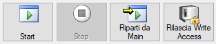

Consente di avviare, fermare, riavviare il ciclo robot. Tramite il pulsante Rilascia Write Access Skipper effettua il rilascio, qualora l’abbia acquisito, del controllo in scrittura sul robot, consentendo la connessione ad altri software, come Robot Studio